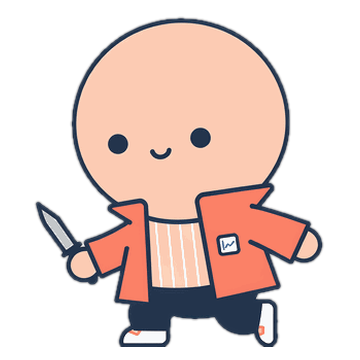
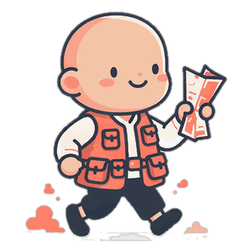
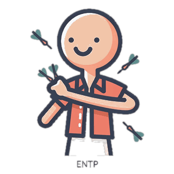
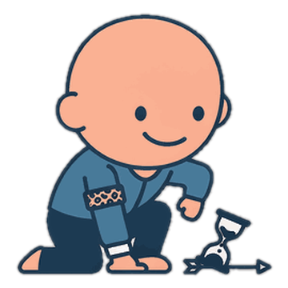
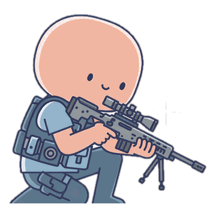
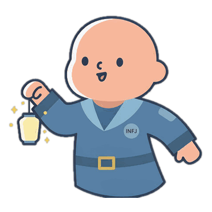
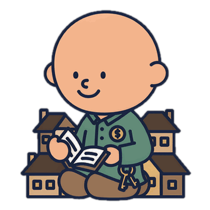
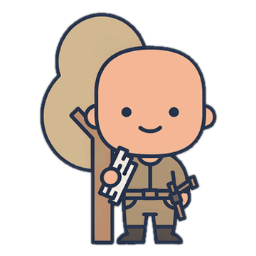
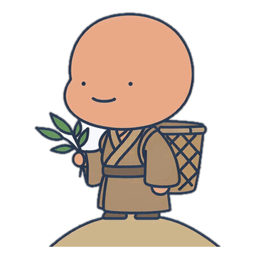
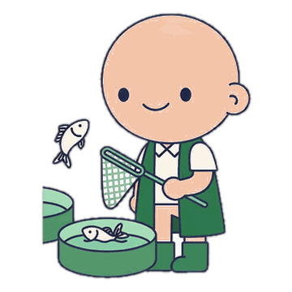

16 型交易人格
四个维度各二选一，共 16 种组合。和一个 MBTI 代号一样，单个字母没有意义，有意义的是它在坐标系里的位置——以及相邻那一格只差哪个字母。
节奏 F 出手快（≤7 天）／S 拿得久归因 B 跟板块／A 走独立盈亏 C 赚了就走／R 赚了能拿持仓 K 押得集中／D 分得开
抢一波就走
FC出手快，赚到心理价立刻落袋。强项是效率，风险是永远吃不到主升段。

FBCK
快刀手
追着板块热点抢一波，赚够就走，仓位压在一只票上

FBCD
游骑兵
跟着板块轮流打，快进快出，但不止押一个方向

FACK
孤刀客
专挑走出独立行情的票，赚一点就撤，重仓单打

FACD
飞镖手
同时盯几只独立票，谁先到价先扔谁，扔完就找下一个
下手快，也敢拿
FR出手快但不急着卖。强项是能咬住肉，风险是回撤时容易把利润还回去。

FBRK
猎豹
板块一动就扑上去，吃到肉才松口，一次只盯一个猎物

FBRD
群狼
板块里同时铺开几只，跑得快的让它继续跑

FARK
狙击手
只在最有把握的独立机会出手，一枪打到底

FARD
走马灯
几只票轮着点亮，不重仓但每只都愿意多等一段
拿得住，却先落袋
SC能守住一个方向，但涨一点就想换钱。强项是耐心，风险是利润被提前截断。

SBCK
守株人
认准板块方向长期守着，涨一点就收，仓位集中

SBCD
收租人
分散持有几只能分红的票，涨到心理价就换一轮

SACK
樵夫
守着自己熟悉的那只票，砍一捆就下山，不贪多

SACD
采药人
在不同板块慢慢采，采到合适的就放进筐里
让时间和利润一起走
SR拿得久也让利润跑。强项是复利，风险是判断错了也不肯走。

SBRK
钓鱼者
跟着板块的潮水等，鱼咬钩了也不急着收线

SBRD
渔场主
同时养几片水域，哪片起鱼都无所谓，长期收成

SARK
猎户
认准一只走出独立趋势的票，一路跟到趋势结束

SARD
庄园主
分散播种、长期持有，靠时间而不是靠择时赚钱
怎么读：先看第一个字母（节奏），再看第三个（盈亏处理），这两个决定赚钱方式；第二个（归因）和第四个（持仓）决定风险集中在哪里。同一行四张图共享色系，说明它们在同一战场，差别只在后两个字母。
形象由 AI 生成，性格结论全部来自你自己的交割单统计，不做心理侧写。
形象由 AI 生成，性格结论全部来自你自己的交割单统计，不做心理侧写。